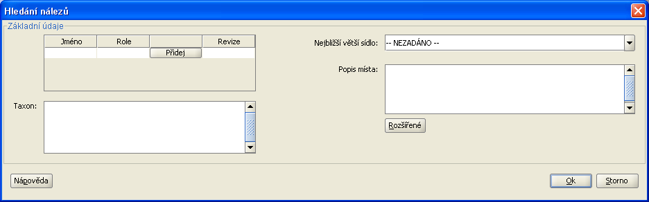

V Plantlore existují dva způsoby jak vyhledávat data - pomocí vyhledávacího dialgu a pomocí tzv. stromu lokalit.
Vyhledávací dialog obsahuje téměř stejná pole jako dialog pro přidávání a editaci nálezů. Vyhledávat je tedy možné podle jakýchkoli zadaných údajů.
Všechna pole se zobrazí až v rozšířeném dialogu po kliknutí na tlačítko Extended.

Dialog se otevírá prázdný. Pokud jej prázdný necháte a rovnou stisknete Ok, tak se v Přehledu nálezů objeví seznam všech nálezů. Což je tedy způsob, jak se vrátit ke zobrazení všech nálezů.
Je možné zadat jakoukoliv kombinaci zobrazených vyplnitelných položek, kterou dialog povolí. Nepovolí například současné zadání časového intervalu a měsíce. Stejně jako dialogy pro přidávání a editaci kontroluje správnost zadaných hodnot. Tj. například, že nadmořská výška obsahuje číselný údaj.
Zadání autora, role či poznámky u autora se provádí stejně jako u Přidávacího a editovacího dialogu. Pro přidání autora klikněte na tlačítko Přidej/Add v levé horní části základního formuláře. Objeví se nový řádek. Zde je možné vyplnit jméno autora nebo roli autora nebo poznámku autora k nálezu. Pokud zadáte jak autora, roli i poznámku autora, tak se nebude hledat tato trojice, ale budou hledány nálezy buď se zadaným autorem nebo se zadanou rolí nebo se zadanou poznámkou. Tj. údaje se při vyhledávání spojují logickou spojkou NEBO. Přidáte-li další řádek, opět se bude vyhledávat pomocí spojky NEBO. Pro názornost malý příklad. Uživatel v prvním řádku zadá jako autora "Nováka" a jako roli "collect". V druhém řádku zadá autora "Široký" a roli "revised". Pokud poté klikne na Ok, tak se v přehledu nálezů objeví všechny nálezy u nichž je jako jeden z autorů uveden buď Novák nebo Široký a také se zobrazí všechny nálezy, u kterých existuje autor v roli "collect" nebo autor v roli "revised".
Jak funguje dotaz v případě autorů, rolí a poznámek autorů k nálezům jsme si již popsali. Zbytek už je přímočarý. Pokud zadáte dva nebo více taxonů, například Pampelišku a Heřmánek, tak se vyhledávají nálezy zadaných taxonů spojených spojkou NEBO, tedy v našem příkladu se hledají nálezy buď Pampelišek nebo Heřmánků.
Ostatní vyplněné položky se do dotazu přidávají logickou spojkou A Zároveň. Například tedy po zadání Heřmánku a Pampelišky jako taxonů a po vybrání Bohemia centralis se po stisku Ok v Přehledu zobrazí nálezy Heřmánků v teritoriu Bohemia centralis a nálezy Pampelišek v teritoriu Bohemia centralis.
Za zmínku ještě stojí vyhledávání v poznámkách. Nehledá se přesná shoda se zadaným textem, ale hledá se zadaný text jako podřetězec poznámky nebo popisu místa. Zadáte-li tedy do popisu místa slovo louka a stisknete Ok, zobrazí se v přehledu všechny nálezy, které v popisu místa nálezu obsahují řetězec "louka". Stejně je tomu u hledání v poznámce k nálezu a v poznámce k místu.
Strom lokalit slouží k rychlému hledání v nálezech podle geografického členění. Je možné ho vyvolat z panelu nástrojů v hlavním okně aplikace.

První vrstva stromu obsahuje teritoria, každý uzel teritoria pak obsahuje fytochoriony a konečně uzel každého fytochorionu obsahuje seznam lokalit. Strom obsahuje pouze ty fytochoriony a teritoria, které už nějaký nález obsahují. Fytochoriony neobsahující žádný nález zobrazeny nejsou. Stejně tak teritoria, která neobsahují alespoň jeden fytochorion obsahující nález nejsou zobrazena.
Zobrazit nálezy v dané lokalitě lze buď dvojklikem na uzel lokality anebo je možné jednoduchým kliknutím uzel označit a pak buď kliknout na levé dolní tlačítko hledat anebo pravým kliknutím myši vyvolat kontextové menu a v něm kliknout na "Hledat".
Informace ve stromu se automaticky neaktualizují spolu s editací databáze, aby se předešlo neočekávanému zpomalení aplikace při pomalém připojení k serveru Plantlore při komunikaci přes síť. Seznam lokalit ve fytochorionu lze jednoduše zavřením a opětovným rozbalením uzlu daného fytochorionu. Pro nové načtení celé struktury stromu slouží pravé dolní tlačítko Obnovit. Funkci Obnovit lze vyvolat i z kontextového menu.